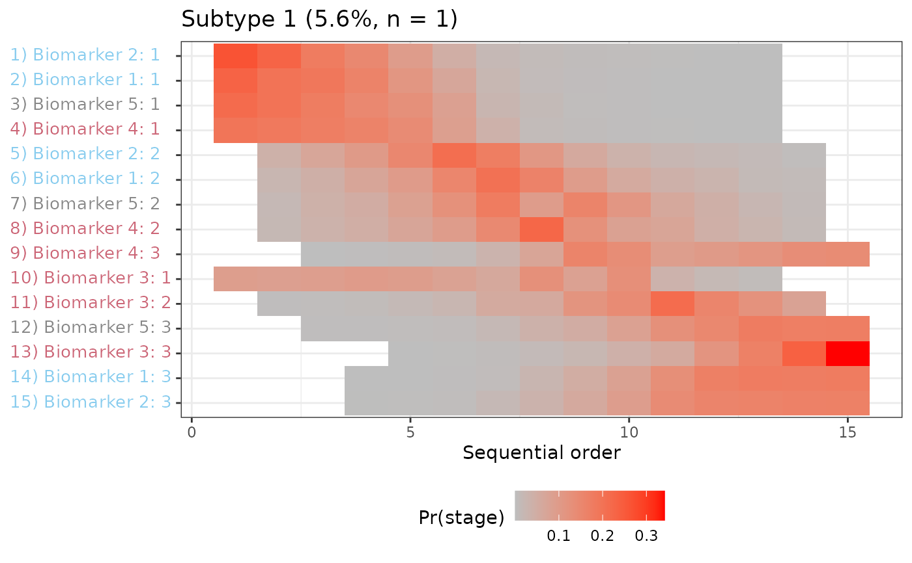
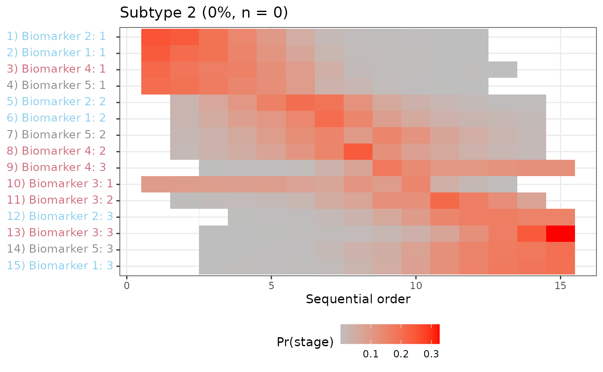
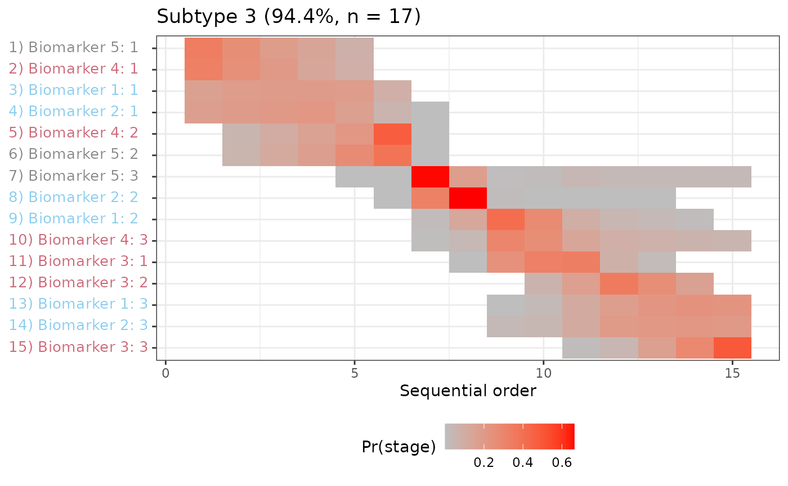

Extact PVDs from pickle file
Usage
extract_figs_from_pickle(
n_s = 1,
dataset_name = "sample_data",
output_folder = "output",
rda_filename = "data.RData",
picklename = paste0(dataset_name, "_subtype", n_s - 1, ".pickle"),
use_rds = TRUE,
biomarker_groups = readr::read_rds(fs::path(output_folder, "biomarker_groups.rds")),
biomarker_levels = readr::read_rds(fs::path(output_folder, "biomarker_levels.rds")),
...
)Arguments
- n_s
number of latent subgroups; helps construct
picklename- dataset_name
root name of dataset
- output_folder
where to find the dataset
- rda_filename
name of rda file containing environment used to run analyses
- picklename
the name of the pickle file to open
- use_rds
logical whether to use previously cached results
- biomarker_groups
data.frame with group colors, etc
- biomarker_levels
list containing biomarker ordinal level info
- ...
Arguments passed on to
plot_positional_varsamples_sequencetodo
samples_ftodo
n_samplestodo
score_valstodo
biomarker_labelstodo
ml_f_EMtodo
cvaltodo
subtype_ordertodo
biomarker_ordertodo
title_font_sizetodo
stage_font_sizetodo
stage_labeltodo
stage_rottodo
stage_intervaltodo
label_font_sizetodo
label_rottodo
cmapbiomarker_coloursa character vector of colors
subtype_titlestodo
separate_subtypestodo
save_pathtodo
save_kwargstodo
resultstodo
biomarker_events_tabletodo
biomarker_event_namestodo
biomarker_plot_ordertodo
synchronize_y_axestodo
use_labelswhether to use biomarker labels or variable names
Value
a "PVD_list (a list of PVD objects from autoplot.PF())
Examples
output_path <-
fs::path_package("extdata/sim_data", package = "fxtas")
if (dir.exists(output_path)) {
figs <- extract_figs_from_pickle(
output_folder = output_path,
n = 3
)
figs
}
#> $`Subtype 1`

#>
#> $`Subtype 2`

#>
#> $`Subtype 3`

#>
#> attr(,"class")
#> [1] "PVD_list" "list"
#> attr(,"biomarker_labels")
#> [1] "Biomarker 1" "Biomarker 2" "Biomarker 3" "Biomarker 4" "Biomarker 5"
#> attr(,"biomarker_event_names")
#> <labelled<character>[15]>
#> [1] Biomarker 1: 1 Biomarker 2: 1 Biomarker 3: 1 Biomarker 4: 1 Biomarker 5: 1
#> [6] Biomarker 1: 2 Biomarker 2: 2 Biomarker 3: 2 Biomarker 4: 2 Biomarker 5: 2
#> [11] Biomarker 1: 3 Biomarker 2: 3 Biomarker 3: 3 Biomarker 4: 3 Biomarker 5: 3
#>
#> Labels:
#> value label
#> Biomarker 1: 0 Biomarker 1: 0
#> Biomarker 1: 1 Biomarker 1: 1
#> Biomarker 1: 2 Biomarker 1: 2
#> Biomarker 1: 3 Biomarker 1: 3
#> Biomarker 2: 0 Biomarker 2: 0
#> Biomarker 2: 1 Biomarker 2: 1
#> Biomarker 2: 2 Biomarker 2: 2
#> Biomarker 2: 3 Biomarker 2: 3
#> Biomarker 3: 0 Biomarker 3: 0
#> Biomarker 3: 1 Biomarker 3: 1
#> Biomarker 3: 2 Biomarker 3: 2
#> Biomarker 3: 3 Biomarker 3: 3
#> Biomarker 4: 0 Biomarker 4: 0
#> Biomarker 4: 1 Biomarker 4: 1
#> Biomarker 4: 2 Biomarker 4: 2
#> Biomarker 4: 3 Biomarker 4: 3
#> Biomarker 5: 0 Biomarker 5: 0
#> Biomarker 5: 1 Biomarker 5: 1
#> Biomarker 5: 2 Biomarker 5: 2
#> Biomarker 5: 3 Biomarker 5: 3
#> attr(,"biomarker_groups")
#> # A tibble: 5 × 3
#> biomarker biomarker_group group_color
#> * <chr> <chr> <chr>
#> 1 Biomarker 1 group 1 #88CCEE
#> 2 Biomarker 2 group 1 #88CCEE
#> 3 Biomarker 3 group 2 #CC6677
#> 4 Biomarker 4 group 2 #CC6677
#> 5 Biomarker 5 group 3 #888888
#> attr(,"biomarker_levels")
#> $`Biomarker 1`
#> [1] 0 1 2 3
#>
#> $`Biomarker 2`
#> [1] 0 1 2 3
#>
#> $`Biomarker 3`
#> [1] 0 1 2 3
#>
#> $`Biomarker 4`
#> [1] 0 1 2 3
#>
#> $`Biomarker 5`
#> [1] 0 1 2 3
#>
#> attr(,"class")
#> [1] "levels_list" "list"